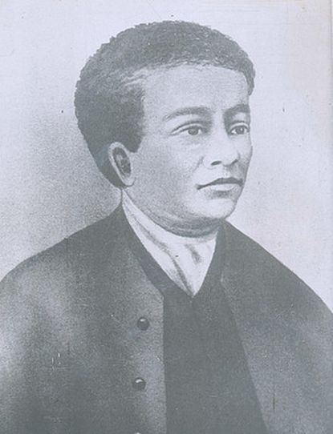

Benjamin Banneker
Author
born on November 9, 1731
Benjamin Banneker was a free African-American almanac author, surveyor, naturalist, and farmer. Born in Baltimore County, Maryland, to a free African-American woman and a former slave, Banneker had little formal education and was largely self-taught.
5 out of 5
With the ability to teach himself with no next to no education is nothing short of remarkable. Through an extensive immersion into astronomy. Bannaker was able to make calculations that predicted eclipses and planetary conjunctions. For a man of color, let alone slave ancestry to acquire such ability and execute it makes him a highly touted Ben of legend.